To get started, select the hamburger icon on the top corner right to begin.
Remember! On public transport, Only Tap On. Don't Tap Off.
From Tukwila Intl. Blvd. Station, head to Westlake Station. This can take around 30 minutes. You will pass Intl. District/Chinatown Station.
When you arrive at the station, you will head up the escalator and look for this picture below. Look for the green service desk station. You'll make a right afterwards.
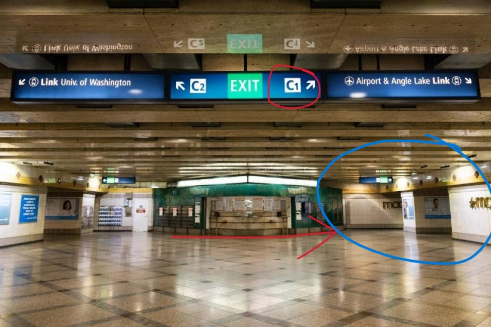When you exit the station, you will need to find Westlake Center mall. On the picture, it shows the direction you should go.
You need to pass UNIQLO. You should see it on your way to Westlake Center.
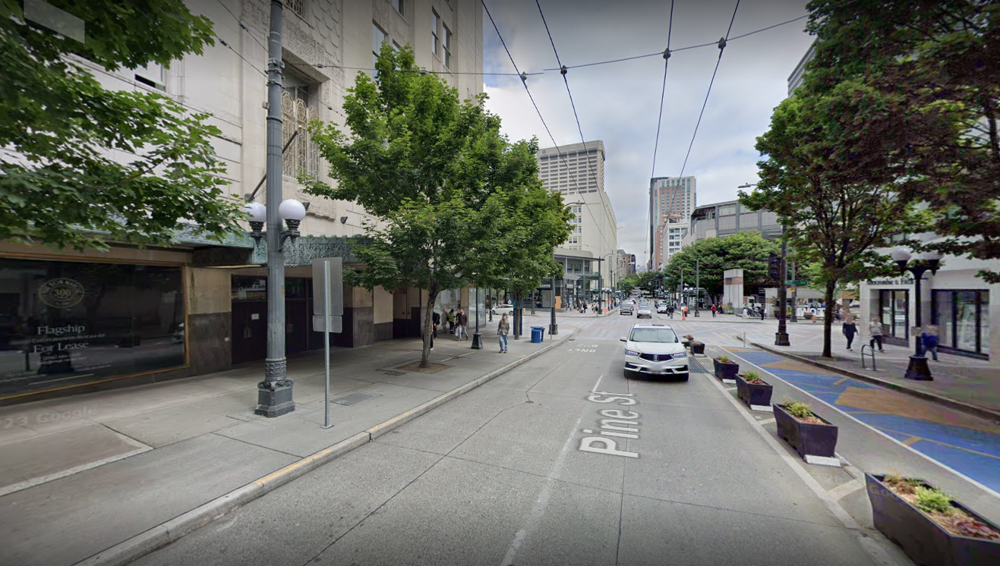From Asean Street Food Hall, enter Westlake Center mall and find the escalators. You need to head to the third floor. Follow the signs.
DO NOT USE THE ELEVATOR! IT WILL NOT LEAD YOU TO THE MONORAIL.
Once at the Seattle Monorail station, use your ORCA card to tap at the gate. There are only 2 ORCA card station readers on the front entrance. LOOK AT THE FLOOR AND FIND THE ORCA CARD READER SIGN OR THE ORCA CARD READER.
FYI: The Monorail is open Monday-Friday: 7:30am-11:00pm. You also have only 1 station. I will laugh at you if you get lost at the Seattle Monorail.
DO NOT TAP OFF ON THE MONORAIL AT THE END OF THE STATION.
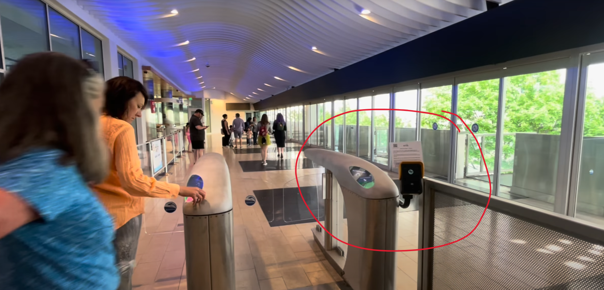You're going to exit the monorail station. Head over to the direction the picture shows (turn left from the station).
Continue straight until you see MoPOP. Head to any entrance, make sure you have your ticket ready.
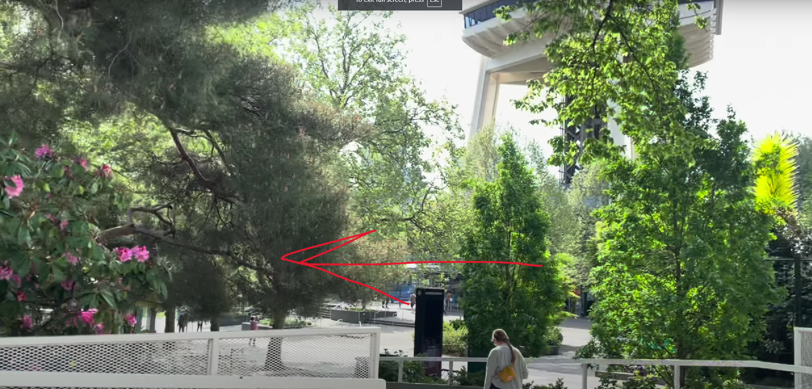You'll need to head from MoPOP to the Seattle Monorail station. Psst! Look for the Space Needle. It's across from there.
As a reminder, you need find on the floor the ORCA card reader. Look at the floor for the ORCA card reader!!!
DO NOT TAP OFF ON THE MONORAIL AT THE END OF THE STATION.
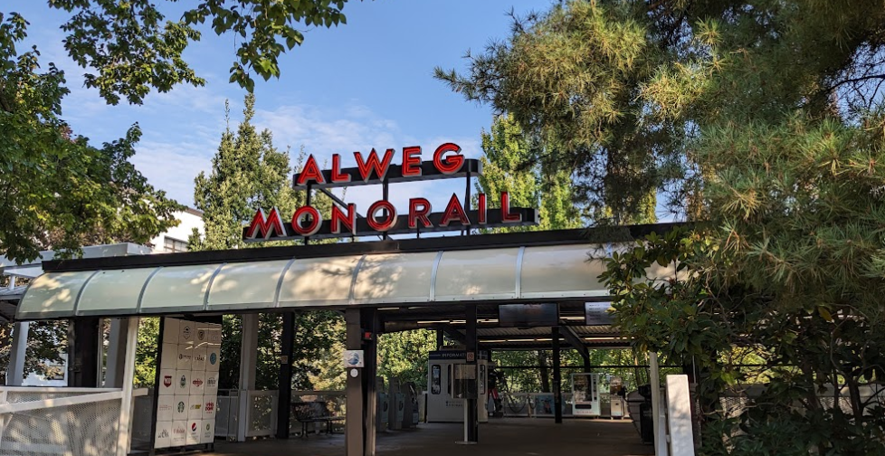Have Google Maps ready to Artly Coffee in Stewart Street.
Once you exit the monorail, follow the arrow like the picture to Macy's.
Make sure to continue straight and keep going straight towards the water.
If you pass by UNIQLO, you're going in the right direction.
Continue straight until you see 2nd Avenue. Like the picture, cross the street and turn right. Continue straight afterwards.
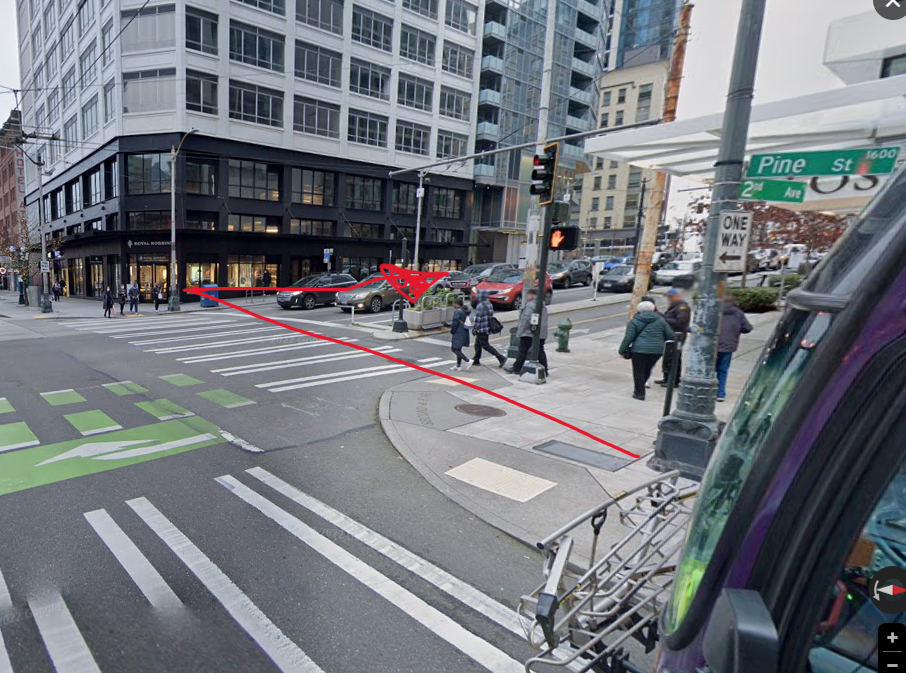On the first corner (Stewart Street), turn left. Don't cross the street.
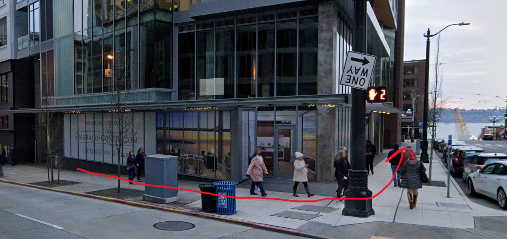Continue straight until you see Artly Coffee. Look closely.
It will be on your left.
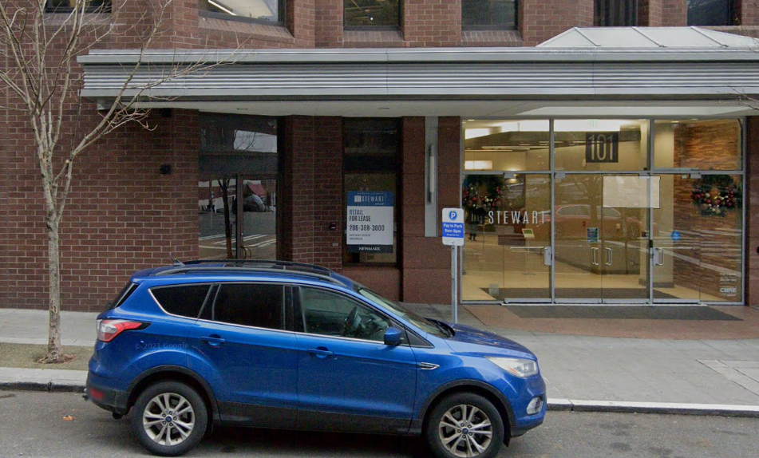From Artly Coffee's front entrance, turn left and continue straight to the waterfront.
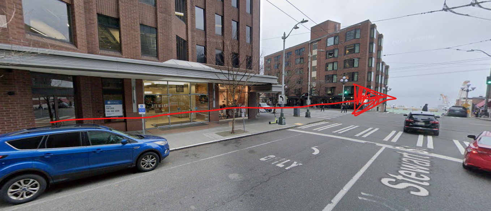Click here for Google Maps to the Westlake Station light rail
Follow the map until you find the light rail station. You will need to take it to the Water Taxi.
Once in the station, go to Symphony Station. You need to go to the Airport/Angle Lake train.
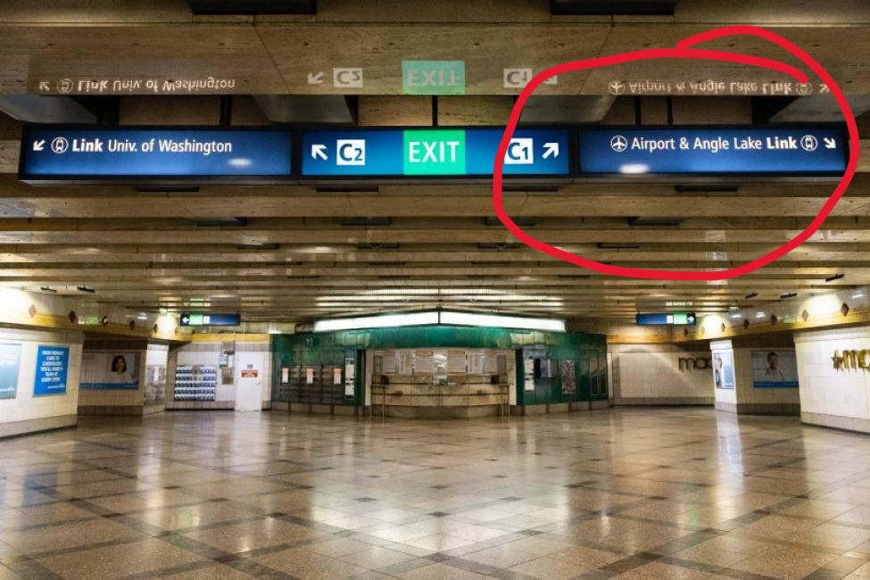You should ride the train for a short time. It's only 1 stop.
Click this link to head to Top Pot Doughnuts before the Water Taxi.
Follow Google Maps. It is critical that you cross the intersection to Marion Street. If that doesn't make sense, be on the side where the destroyed building is.
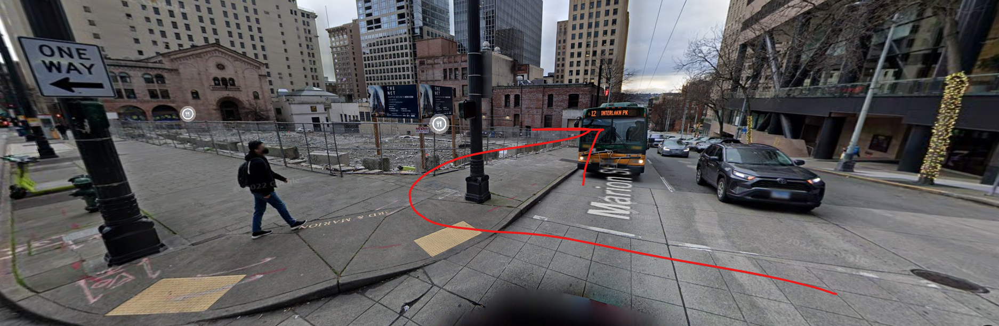Once you're done eating at the doughnut place, head to the Seattle Ferry Terminal and find the elevators. Head down the elevator. Do not head inside the ferry terminal.
Click here to go to the water taxi once you head down the elevator.
Here is the Water Taxi schedule, if you need it.
HEAD TO THE WEST SEATTLE WATER TAXI!
Once you leave the water taxi, continue straight on the pier to Marination. You can't miss it.
Here are the hours for Marination Ma Kai
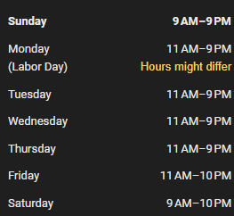Here are the hours for Marination Ma Kai
Head on the Water Taxi going back to Seattle. There is only one water taxi, so you can't miss it.
Once you're back in Seattle, you need to head to Symphony Station on the bus.
Click here to take the bus to Symphony Station
Click here to walk to Symphony Station
If you're taking the bus, the bus stop should look like this.
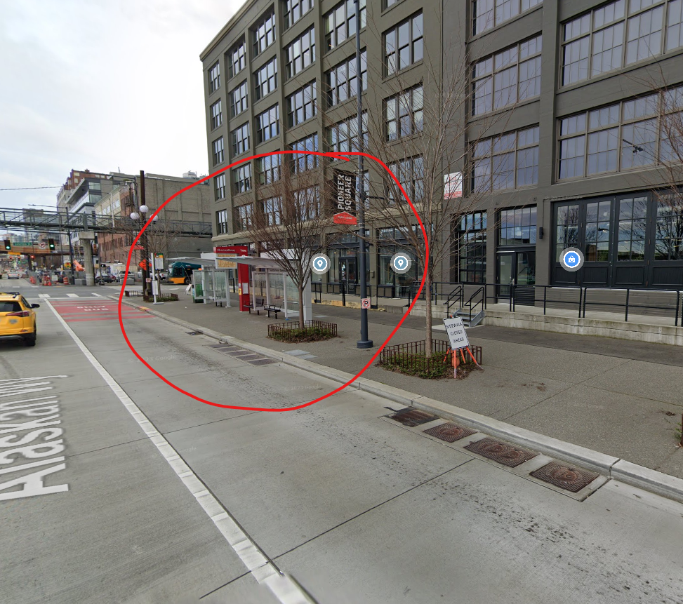Once at Symphony Station, head to the Angle Lake/Airport train.
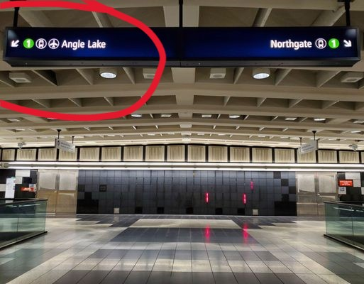Once you're on the train, it's back to Tukwila Light Rail Station.
Good Job! You did it.